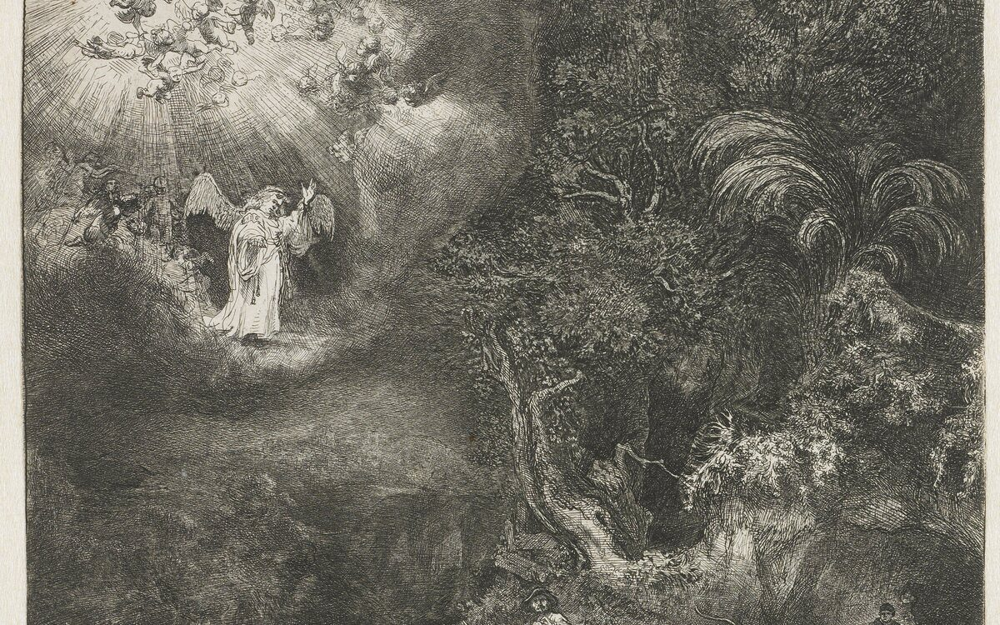
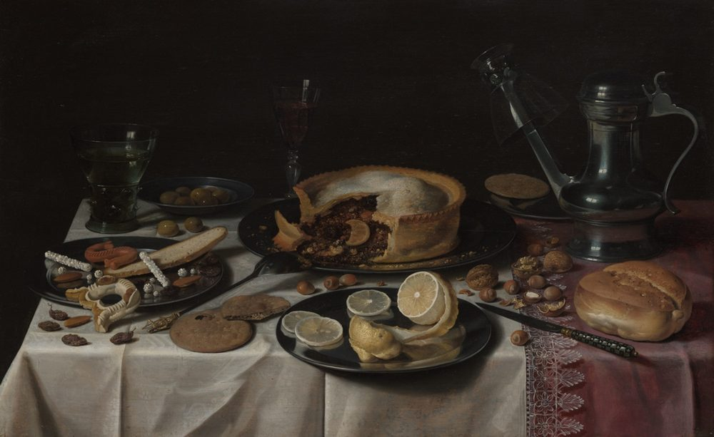
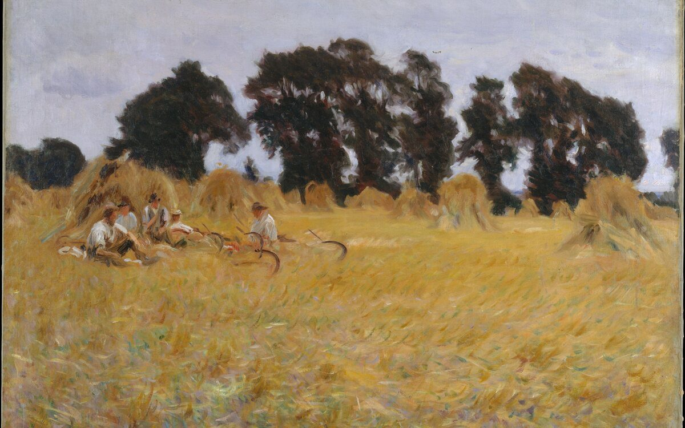
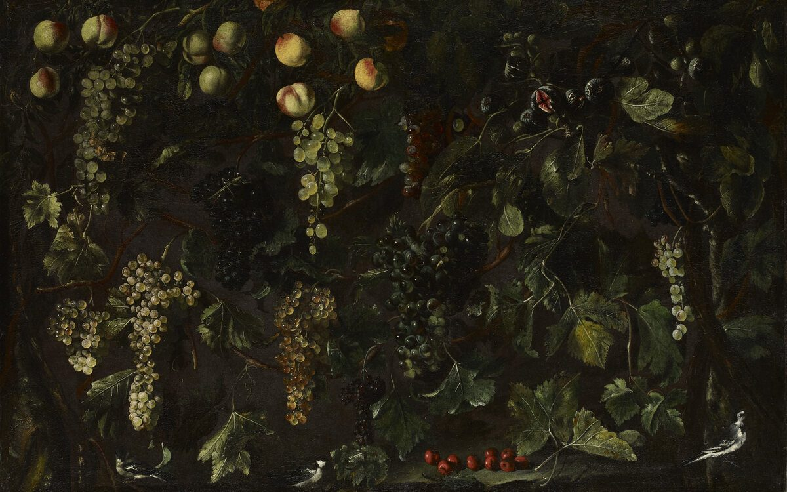
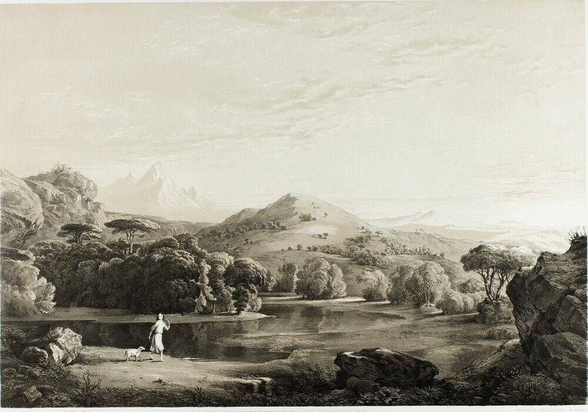
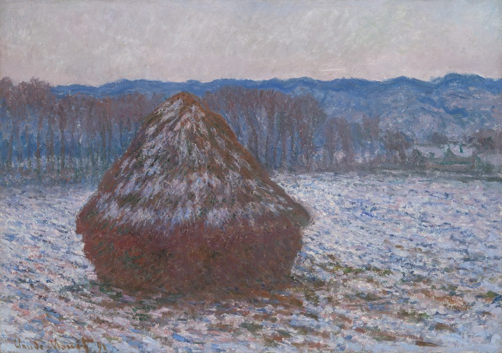
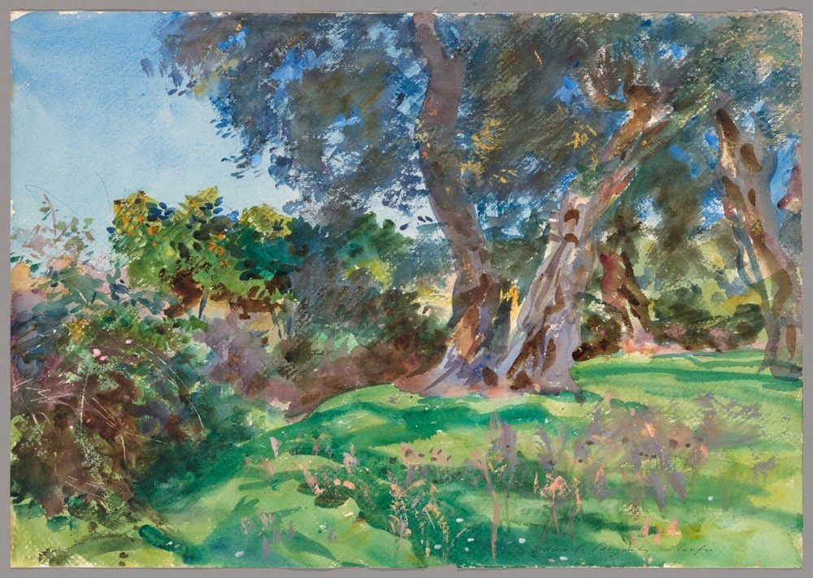

Led, not driving
“For as many as are led by the Spirit of God, they are the sons of God.”
Romans 8:14Heirs of the promise
The family of God has an inheritance, and it is given by promise rather than by pedigree. It is also, deliberately, easy to recognise: his people are known by their fruit. This page sets out both the glory of the inheritance and the line that runs through the middle of it — for the Scripture tells us plainly what happens to a branch that bears nothing.
Nothing here is inherited by the world. The word of God is unusually blunt about it: those who are of the flesh are not the children of God, however faithfully they were raised. What is counted for the seed is the promise, and the promise is received by faith. So an heir in this family is not a man who remembers his ancestors but a man who trusts the promise of God — and the difference between the two is the difference between a name and a life.
“Know ye therefore that they which are of faith, the same are the children of Abraham.”
Galatians 3:7
“They which are the children of the flesh, these [are] not the children of God: but the children of the promise are counted for the seed.”
Romans 9:8
“And if ye [be] Christ's, then are ye Abraham's seed, and heirs according to the promise.”
Galatians 3:29
“Therefore [it] [is] of faith, that [it] [might] [be] by grace; to the end the promise might be sure to all the seed; not to that only which is of the law, but to that also which is of the faith of Abraham; who is the father of us all,.”
Romans 4:16
The promise is borderless, and it is not defined by the world.
The glory
This is the heart of the promise. Not a plot of ground, not a house that decays, not a reputation that a generation will bury — an inheritance that cannot be spoiled, cannot be defiled, and cannot be taken away by fire or flood or time. The heirs of this family hold their treasure in another country, and the country is better than any they were born in.
“To an inheritance incorruptible, and undefiled, and that fadeth not away, reserved in heaven for you.”
1 Peter 1:4
“And if children, then heirs; heirs of God, and joint-heirs with Christ.”
Romans 8:17
“Wherefore thou art no more a servant, but a son; and if a son, then an heir of God through Christ.”
Galatians 4:7
“Giving thanks unto the Father, which hath made us meet to be partakers of the inheritance of the saints in light.”
Colossians 1:12
It cannot be lost. It was sealed in heaven before you were born.

The greatest inheritance is not land, and not treasure, and not even a kingdom. It is God himself — allotted to his people as a portion, meted out in boundary stones they can hold. Which is why his mercies do not run out. They are new every morning, and the faithfulness behind them is very great.
“The LORD [is] the portion of mine inheritance and of my cup: thou maintainest my lot.”
Psalm 16:5
“The lines are fallen unto me in pleasant [places]; yea, I have a goodly heritage.”
Psalm 16:6
“¶[It] [is] [of] the LORD’S mercies that we are not consumed, because his compassions fail not. [They] [are] new every morning: great [is] thy faithfulness.”
Lamentations 3:22–23
The family
A man does not find his way into this family by an opinion he holds, but he is unmistakable in it once he is in it. There are three marks, and all three are visible from the outside.

“For as many as are led by the Spirit of God, they are the sons of God.”
Romans 8:14
“if any man [be] in Christ, [he] [is] a new creature: old things are passed away; behold, all things are become new.”
2 Corinthians 5:17
“For he is our peace, who hath made both one, and hath broken down the middle wall of partition [between] [us].”
Ephesians 2:14How you will know
Christ put it more plainly than any writer since: you do not recognise his people by their attendance, or their arguments, or the ring they wear. You recognise them by what comes out of them. The fruit of the Spirit is not a reputation and not a profession. It is nine things, and they grow together or not at all.
“But the fruit of the Spirit is love, joy, peace, longsuffering, gentleness, goodness, faith, meekness, temperance.”
Galatians 5:22–23
“Put on therefore, as the elect of God, holy and beloved, bowels of mercies, kindness, humbleness of mind, meekness, longsuffering;”
Colossians 3:12
“Ye shall know them by their fruits. Do men gather grapes of thorns, or figs of thistles? Even so every good tree bringeth forth good fruit; but a corrupt tree bringeth forth evil fruit. A good tree cannot bring forth evil fruit, neither [can] a corrupt tree bring forth good fruit. Every tree that bringeth not forth good fruit is hewn down, and cast into the fire. Wherefore by their fruits ye shall know them.”
Matthew 7:16–20
If that list reads like a description of you, then you are not reading about strangers.
Not on the stage, but at home. Not in the meeting, but in the argument you had and did not enjoy. God's people are not recognised by the office they hold but by what they are when no one is watching — and the Bible says that the private life is the proof of the public one.
“Teaching us that, denying ungodliness and worldly lusts, we should live soberly, righteously, and godly, in this present world;”
Titus 2:12
“Finally, brethren, whatsoever things are true, whatsoever things [are] honest, whatsoever things [are] just, whatsoever things [are] pure, whatsoever things [are] lovely, whatsoever things [are] of good report; if [there] [be] any virtue, and if [there] [be] any praise, think on these things.”
Philippians 4:8
“But the wisdom that is from above is first pure, then peaceable, gentle, [and] easy to be intreated, full of mercy and good fruits, without partiality, and without hypocrisy.”
James 3:17
His people are not only fruit-bearing; they are gift-bearing. Brought forth from within — endowments of the Spirit, given to each one, for the good of all. No man takes these to himself, and no man buries them. He receives, and he ministers the same to another, as a steward of a grace that was never his own.
“For to one is given by the Spirit the word of wisdom; to another the word of knowledge by the same Spirit; To another faith by the same Spirit; to another the gifts of healing by the same Spirit; To another the working of miracles; to another prophecy; to another discerning of spirits; to another [divers] kinds of tongues; to another the interpretation of tongues:”
1 Corinthians 12:8–10
“As every man hath received the gift, [even] [so] minister the same one to another, as good stewards of the manifold grace of God.”
1 Peter 4:10

Scattered, and then gathered. Lost, and then found. The Shepherd goes after what was lost, and what he brings back he brings back together — one fold, one flock, one table. And when they arrive, they find the sheepfolds of other nations already set aside for them.
“And hath made of one blood all nations of men for to dwell on all the face of the earth.”
Acts 17:26
“Behold, I make all things new.”
Revelation 21:5
The other side of the line
We have said what God's family looks like. Now we will say what is on the other side of the line, because a herald who will not point at the danger has not done his work. These two are not two descriptions of one kind of man. They are two different kinds, and the Bible names both without softening either.
“[This] I say then, Walk in the Spirit, and ye shall not fulfil the lust of the flesh. For the flesh lusteth against the Spirit, and the Spirit against the flesh: and these are contrary the one to the other: so that ye cannot do the things that ye would.”
Galatians 5:16–17
“Now the works of the flesh are manifest, which are [these]; Adultery, fornication, uncleanness, lasciviousness, Idolatry, witchcraft, hatred, variance, emulations, wrath, strife, seditions, heresies, Envyings, murders, drunkenness, revellings, and such like: of the which I tell you before, as I have also told [you] in time past, that they which do such things shall not inherit the kingdom of God.”
Galatians 5:19–21
“So then they that are in the flesh cannot please God.”
Romans 8:8
Read that list once more. It is not a list of men who are excluded. It is a list of things that do not grow in this family.

Christ put it in the plainest image we have. He is the vine; we are the branches; the Father is the husbandman. He does the pruning that makes us bear more — and he takes away what bears nothing. That is not a threat. It is how a vine actually works, and he said it plainly to his own disciples a few days before he died.
“I am the true vine, and my Father is the husbandman. Every branch in me that beareth not fruit he taketh away: and every [branch] that beareth fruit, he purgeth it, that it may bring forth more fruit.”
John 15:1–2
“I am the vine, ye [are] the branches: He that abideth in me, and I in him, the same bringeth forth much fruit: for without me ye can do nothing. If a man abide not in me, he is cast forth as a branch, and is withered; and men gather them, and cast [them] into the fire, and they are burned.”
John 15:5–6
The same tree, the same sun, the same rain — and two very different endings. The difference is abiding, and the fruit is how you tell.

He gives a barren fig tree one more year. He does not give many. The dresser digs around it and puts compost around it — that is real, and it is patient, and it is not a suggestion. But the story does not end with the digging. The story ends with the owner's answer, and the owner's answer was: cut it down.
“¶He spake also this parable; A certain [man] had a fig tree planted in his vineyard; and he came and sought fruit thereon, and found none.”
Luke 13:6
“Then said he unto the dresser of his vineyard, Behold, these three years I come seeking fruit on this fig tree, and find none: cut it down; why cumbereth it the ground? And he answering said unto him, Lord, let it alone this year also, till I shall dig about it, and dung [it].”
Luke 13:7–8
And then he will confess unto me
This is the last thing we will say, and we say it because it is in the Book and not because it is our mood. On that day the Son of Man will stand before his own servants and speak words none of them expected to hear. Religious words will not save them. Titles will not save them. What they will be asked about is their fruit — and a life of unfruitful works will be named as what it was.
“Not every one that saith unto me, Lord, Lord, shall enter into the kingdom of heaven; but he that doeth the will of my Father which is in heaven.”
Matthew 7:21
“And then will I profess unto them, I never knew you: depart from me, ye that work iniquity.”
Matthew 7:23
“Every man’s work shall be made manifest: for the day shall declare it, because it shall be revealed by fire; and the fire shall try every man’s work of what sort it is. If any man’s work abide which he hath built thereupon, he shall receive a reward. If any man’s work shall be burned, he shall suffer loss: but he himself shall be saved; yet so as by fire.”
1 Corinthians 3:13–15
“For there are certain men crept in unawares, who were before of old ordained to this condemnation, ungodly men, turning the grace of our God into lasciviousness, and denying the only Lord God, and our Lord Jesus Christ.”
Jude 1:4
That is why the nine things above are not decoration. They are the difference between two kingdoms, and every branch will be sorted by them.
The heirs of this family hold their treasure lightly here. They never received the promises in the sense of taking hold of them — they saw them from a long way off, and confessed they were strangers upon the earth. That is not sadness. It is the posture of a people whose home has already been built for them, and whose tent is not the point.
“These all died in faith, not having received the promises, but having seen them afar off, and were persuaded of [them], and embraced [them], and confessed that they were strangers and pilgrims on the earth.”
Hebrews 11:13
“And what agreement hath the temple of God with idols? for ye are the temple of the living God; as God hath said, I will dwell in them, and walk in [them]; and I will be their God, and they shall be my people.”
2 Corinthians 6:16
“Behold, the tabernacle of God [is] with men, and he will dwell with them, and they shall be his people, and God himself shall be with them, [and] [be] their God.”
Revelation 21:3
And an heir is not left to guess what has been set aside for him. So the last thing this page has to do is turn the inheritance into a list — because an inheritance you cannot name is not yet received.
Those who are of faith, and not those who are merely of the house. The children of the flesh are not the children of God; the promise is counted for the seed, and the seed is received by faith (Romans 9:8; Galatians 3:29).
No. God hath made of one blood all nations of men (Acts 17:26). There is no preferred nation and no excluded nation — only one Shepherd, and his fold.
An inheritance incorruptible and undefiled, reserved in heaven (1 Peter 1:4), and the LORD himself as the portion of it (Psalm 16:5). The heirs of God are joint-heirs with Christ (Romans 8:17).
No — and it matters that you understand why. Fruit does not make a tree alive; fruit is how a living tree is recognised. The inheritance is the promise, received by faith; the fruit is the evidence, never the price.
That was the old way of reading, and it is not the way the Gospel reads. Every branch that abides in Christ brings forth fruit (John 15:5), and the God who purges a branch purges it precisely so that it may bring forth more. The question this page presses is not whether the fruit can be manufactured, but whether the branch is in the vine at all.
Because the promise of an inheritance is worthless to a man who thinks it can be had on the terms the world offers. The Bible does not describe a family that tolerates fruitlessness, and neither do we. The warning is not aimed at God's people — it is aimed at the comfortable, and it is offered while there is still time to bear fruit.